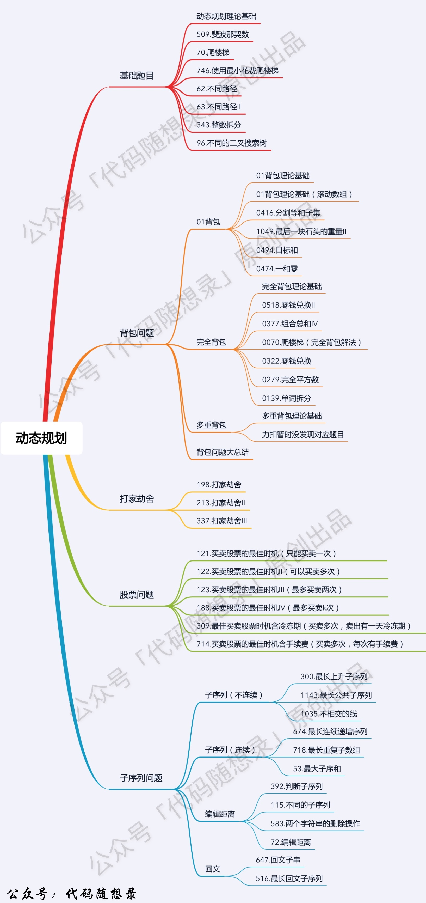
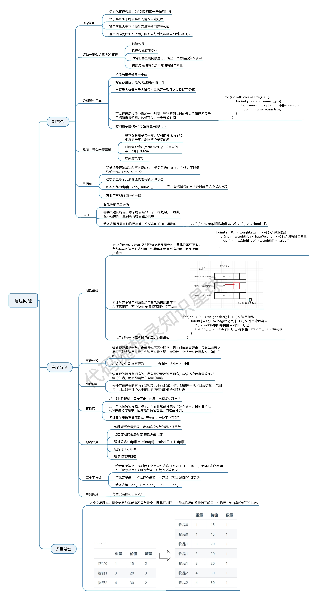
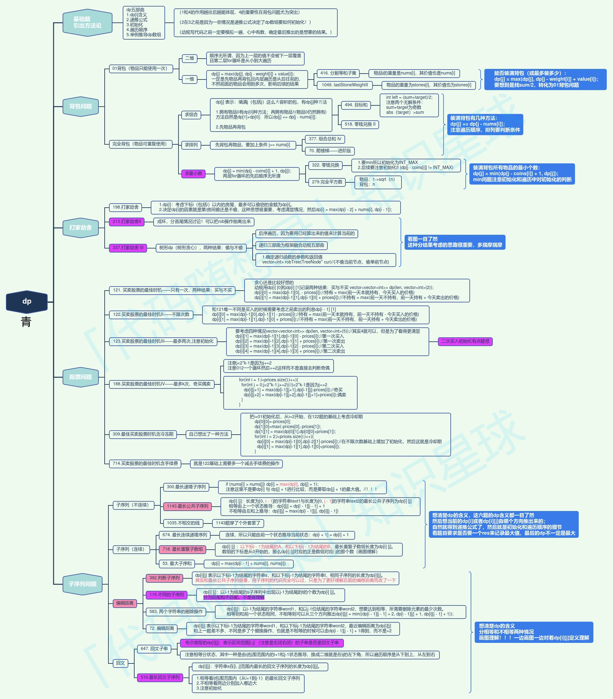

友情支持
如果您觉得这个笔记对您有所帮助，看在D瓜哥码这么多字的辛苦上，请友情支持一下，D瓜哥感激不尽，😜
|
|


有些打赏的朋友希望可以加个好友，欢迎关注D 瓜哥的微信公众号，这样就可以通过公众号的回复直接给我发信息。

公众号的微信号是: jikerizhi。因为众所周知的原因，有时图片加载不出来。 如果图片加载不出来可以直接通过搜索微信号来查找我的公众号。 |
Dynamic Programming 动态规划
动态规划的设计思想：「不是直接面对问题求解，而是从一个最小规模的问题开始，新问的最优解均是由比它规模还小的子问题的最优解转换得到，在求解的过程中记录每一步的结果，直至所要求的问题得到解」。

动态规划的五部曲：
-
确定 dp 数组（dp table）以及下标的含义
-
确定递推公式
-
dp 数组如何初始化
-
确定遍历顺序
-
举例推导 dp 数组
.1. 入门题目
-
2560. 打家劫舍 IV — 这个不是动态规划题目。
-
980. 不同路径 III — 这是一道回溯问题。
-
140. 单词拆分 II — 这是一道回溯题。
-
[1964-find-the-longest-valid-obstacle-course-at-each-position]
.2. 进阶
.3. 经典题目
-
[0828-count-unique-characters-of-all-substrings-of-a-given-string]
-
[1269-number-of-ways-to-stay-in-the-same-place-after-some-steps]
-
[1334-find-the-city-with-the-smallest-number-of-neighbors-at-a-threshold-distance]
-
[1420-build-array-where-you-can-find-the-maximum-exactly-k-comparisons]
-
[1449-form-largest-integer-with-digits-that-add-up-to-target]
-
[1467-probability-of-a-two-boxes-having-the-same-number-of-distinct-balls]
-
[1477-find-two-non-overlapping-sub-arrays-each-with-target-sum]
-
[1526-minimum-number-of-increments-on-subarrays-to-form-a-target-array]
-
[1639-number-of-ways-to-form-a-target-string-given-a-dictionary]
-
[1770-maximum-score-from-performing-multiplication-operations]
-
[1866-number-of-ways-to-rearrange-sticks-with-k-sticks-visible]
-
[1888-minimum-number-of-flips-to-make-the-binary-string-alternating]
-
[1959-minimum-total-space-wasted-with-k-resizing-operations]
-
[1981-minimize-the-difference-between-target-and-chosen-elements]
-
[2002-maximum-product-of-the-length-of-two-palindromic-subsequences]
-
[2035-partition-array-into-two-arrays-to-minimize-sum-difference]
-
[2060-check-if-an-original-string-exists-given-two-encoded-strings]
-
[2167-minimum-time-to-remove-all-cars-containing-illegal-goods]
-
[2400-number-of-ways-to-reach-a-position-after-exactly-k-steps]
-
[2436-minimum-split-into-subarrays-with-gcd-greater-than-one]
-
[2472-maximum-number-of-non-overlapping-palindrome-substrings]
-
[2510-check-if-there-is-a-path-with-equal-number-of-0s-and-1s]
-
[2522-partition-string-into-substrings-with-values-at-most-k]
-
[2556-disconnect-path-in-a-binary-matrix-by-at-most-one-flip]
-
[2892-minimizing-array-after-replacing-pairs-with-their-product]
-
[2915-length-of-the-longest-subsequence-that-sums-to-target]
-
[2930-number-of-strings-which-can-be-rearranged-to-contain-substring]
-
[3007-maximum-number-that-sum-of-the-prices-is-less-than-or-equal-to-k]
-
[3018-maximum-number-of-removal-queries-that-can-be-processed-i]
-
[3041-maximize-consecutive-elements-in-an-array-after-modification]
-
[3135-equalize-strings-by-adding-or-removing-characters-at-ends]
-
[3144-minimum-substring-partition-of-equal-character-frequency]
-
[3165-maximum-sum-of-subsequence-with-non-adjacent-elements]
-
[3192-minimum-operations-to-make-binary-array-elements-equal-to-one-ii]
-
[3389-minimum-operations-to-make-character-frequencies-equal]
-
[3409-longest-subsequence-with-decreasing-adjacent-difference]
-
[3410-maximize-subarray-sum-after-removing-all-occurrences-of-one-element]
-
[3428-maximum-and-minimum-sums-of-at-most-size-k-subsequences]
-
[3472-longest-palindromic-subsequence-after-at-most-k-operations]
-
[3505-minimum-operations-to-make-elements-within-k-subarrays-equal]
.4. 0/1 Knapsack 0/1 背包

.5. Unbounded Knapsack 无限背包
.6. Fibonacci Numbers 斐波那契数列
.7. Palindromic Subsequence 回文子系列
.8. Longest Common Substring 最长子字符串系列
.8.1. 经典题目
Longest Common Substring，最长相同子串
Longest Common Subsequence，最长相同子序列
Minimum Deletions & Insertions to Transform a String into another，字符串变换
Longest Increasing Subsequence，最长上升子序列
Maximum Sum Increasing Subsequence，最长上升子序列和
Shortest Common Super-sequence，最短超级子序列
Minimum Deletions to Make a Sequence Sorted，最少删除变换出子序列
Longest Repeating Subsequence，最长重复子序列
Subsequence Pattern Matching，子序列匹配
Longest Bitonic Subsequence，最长字节子序列
Longest Alternating Subsequence，最长交差变换子序列
Edit Distance，编辑距离
Strings Interleaving，交织字符串

.9. 树形 DP 套路
树形 DP 套路使用前提：如果题目求解目标是 S 规则，则求解释流程可以定成以每一个节点为头节点的子树在 S 规则下的每一个答案，并且最终答案一定就在其中。
树形 DP 套路的解题步骤
-
第一步：以某个节点 X 为头节点的子树中，分析答案有哪些可能性，并且这种分析是以 X 的左子树、X 的右子树和 X 整棵树的角度来考虑可能性的。
请注意这里的顺序：左子树、右子树及整棵树。先左右，如果左右满足，则就可以先上延伸，判断出整棵树。这也是递归调用“触底反弹”的过程。所以，很容易使用递归来完成相关操作。根据上述的流程，使用 后序遍历 更合适。 -
第二步：根据第一步的可能性分析，列出所有需要的信息。比如：最大值、最小值，高度，深度，节点数等等。
-
第三步：合并第二步的信息，对左树和右树提出同样的要求，并写出信息结构。
写出信息结构是把所有的信息都装到一个对象中。如果只需要一个信息，就可以用简单类型来表示了。但是，在树的结构中，大概率是需要多个信息的。 -
第四步：设计递归函数，递归函数是处理以 X 为头节点的情况下的大难，包括设计递归的 base case，默认直接得到左树和右树的所有信息，以及把可能性做整合，并且要返回第三步的信息结构。